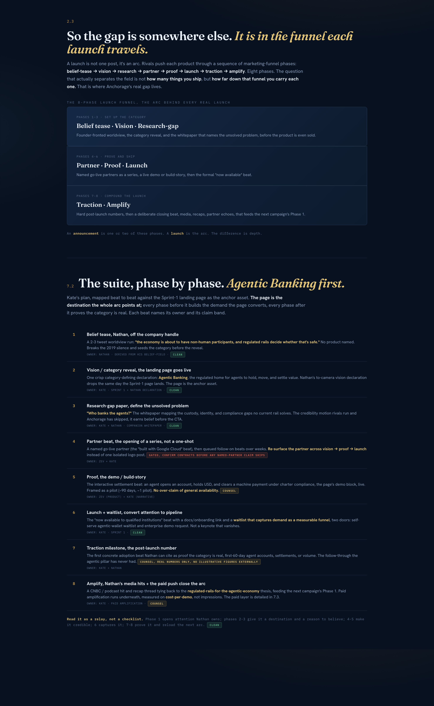
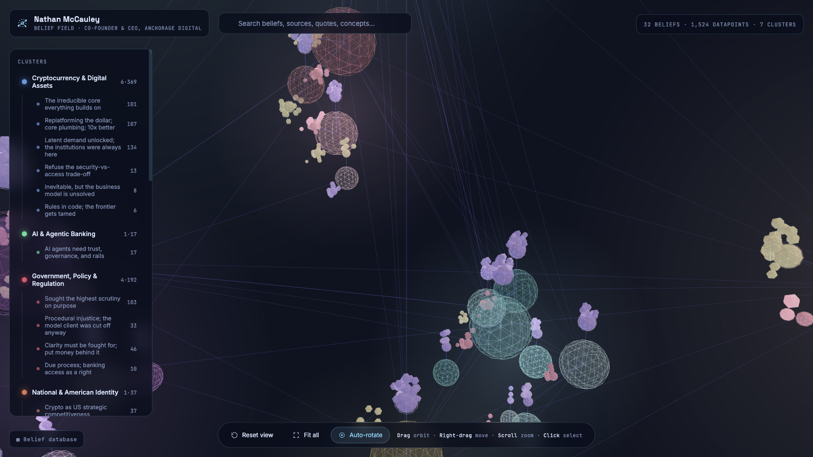
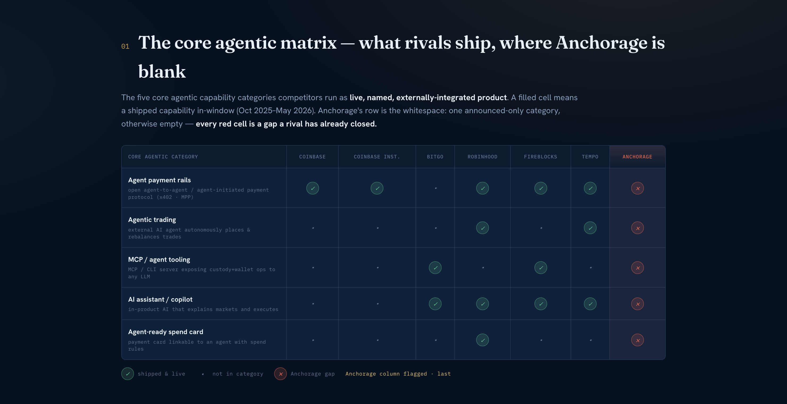
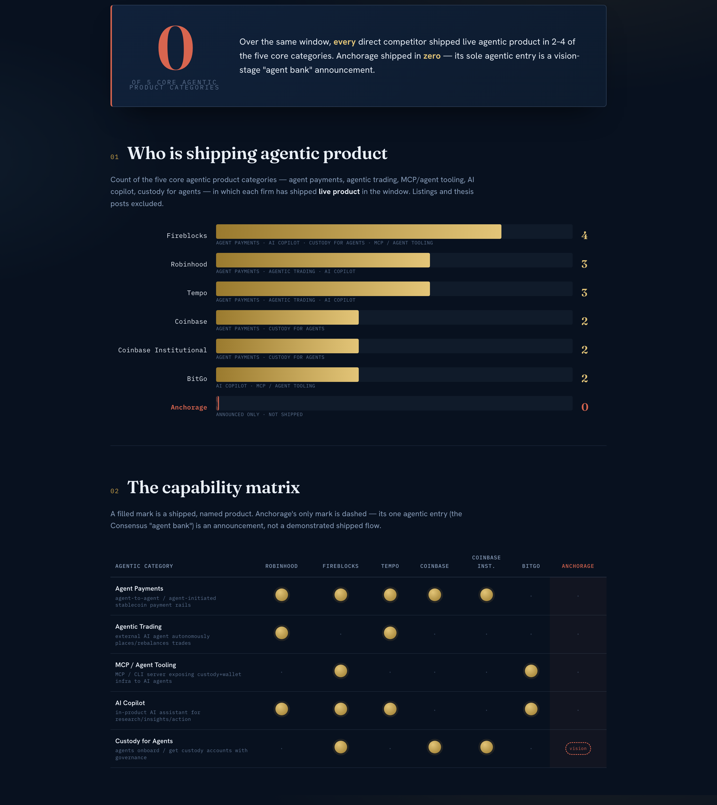
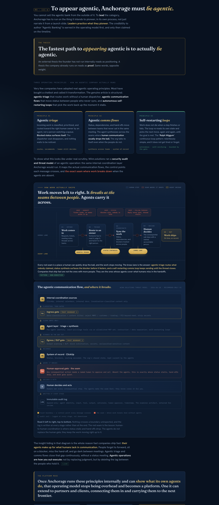
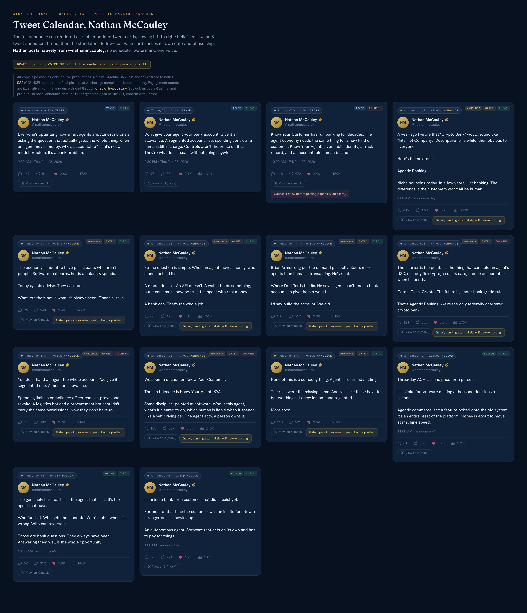

Nathan as the ignition. The category as the payload.
Lead with what Nathan actually believes, published in his own voice. The category follows. The company compounds behind it.
A founder's personal conviction can carry a company's whole category. Garry Tan's brand pulls Y Combinator. Yours can do the same for Anchorage in regulated, agentic financial rails. This is elevation, not invention, the product already shipped (Agentic Banking, announced 2026-05-05).
The campaign is not a content calendar. It is a tree. Nathan's convictions are the root system, and each phase, the tease, the announce, the proof, the co-sign, draws from the same belief core, so the message never drifts off who he actually is.

We lead with your convictions, your posts name the line, and the product sits underneath as proof.

Know Your Agent, a verifiable identity with an accountable human. The allowance model, where controls are what let it scale. Both verified.
The charter framed as a trailblazing act. "Never been a better time to make their move." Both verified.
Every claim is sourced to a dated public appearance. The full interactive field is the next surface we render.
Circle, Ripple, BitGo, Fidelity Digital Assets and Paxos were granted limited-purpose trust charters. No deposits, no FDIC, no lending, no fiat rails. They cannot be the agent's bank.
Charter plus Atlas scale plus custody depth plus multi-jurisdiction plus a KYA head start. An accountable-human, due-process posture only a regulated bank can make stick.

"We won the Western Union issuance deal, but they went to somebody else, Paxos, for the orchestration, payouts, and token management, because they didn't feel like we had that tech in-house."
The gap is execution, not standing. Anchorage held the charter and still lost the orchestration layer to a limited-purpose trust company. The fix is not more regulation. It is shipping the agentic, AI-native tech the foundation was built to carry.

If you want to be known for AI and agentic, make Anchorage the first truly operationally agentic sound company. The credibility is the operating model, not the messaging.

KYA, Know Your Agent, is the single belief that carries the category. The honest frame is controls, not "AI is revolutionary."
Nothing in your voice ships until the voice spine and compliance sign off. The restraint is the credibility. One capability over-claim is a failed launch, regardless of every other number.
Target Monday 6/30 or Tuesday 7/1 (date TBD, confirm). This is the Agentic Banking announcement, declared in Nathan's voice, with the proof stacked behind it. There is no waitlist and no recruiting campaign.
The Agentic Banking page goes live, and Nathan posts the 8-tweet announce thread as one native thread (verbatim, gated on voice spine + compliance).
The launch-hour declaration video and the "Who Banks the Agents?" paper anchor the press and the category framing.
No waitlist. No recruiting. Positioning only, no live-product or GA claim. Three belief teases run Thu 6/26 and Fri 6/27 ahead of the announce.

The launch-hour declaration and the allowance-model explainer. These anchor the announce.
After the voice spine and compliance sign off. The 8-tweet thread and the belief teases, not before.
The foundation is the best in the field. The deals we are losing are lost on tech execution. Ship the agentic, AI-native layer.
One conviction carries the category. We resist the urge to say everything at once.
A live web dashboard, the relationship ring and belief field rendered, is the next surface. This executes the scope your team greenlit on the 2026-06-09 alignment call.